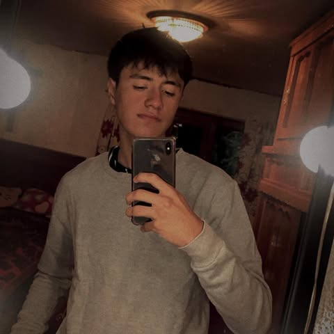

Nuestro Equipo Técnico
Dillan y Allan Solis trabajan juntos para formar no solo futbolistas, sino personas íntegras con valores como respeto, trabajo en equipo y superación personal.

Dillan Solis
Entrenador
"Mi misión es que cada niño descubra su pasión por el fútbol mientras aprende valores para la vida."
Especialidades
- Desarrollo técnico individual
- Estrategia de juego
- Motivación infantil
- Formación en valores

Allan Solis
Entrenador
"Cada niño tiene un talento único. Ayudarlos a descubrirlo es mi mayor satisfacción."
Especialidades
- Coordinación motriz
- Ejercicios lúdicos
- Trabajo en equipo
- Preparación física infantil
Nuestra Filosofía
Diversión
Aprendizaje a través del juego y la diversión
Respeto
Valor fundamental en el deporte y la vida
Compañerismo
Trabajo en equipo como base del éxito
Superación
Mejora continua y perseverancia